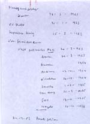

De verandering waargenomen
A.E. Cohen als historicus en universitair bestuurder
Tentoonstelling in de Universiteitsbibliotheek te Leiden, van 28 november 2003 tot en met 4 januari 2004.
Tentoongestelde stukken
7. Oorlogsdocumentatie II
| 7.1. Hanns A. Rauter – persoon en
daden, Nederland in oorlogstijd : orgaan van het Rijksinstituut
voor Oorlogsdocumentatie 4 (1949) nr. 1, 12-17 [AEC]
¶ Door Cohen opgesteld organogram van de positie van Rauter. |
|
| 7.2. “Frontuniversität Leiden”. Een
plan van Dr. Wimmer tot ver-Duitsing van de Leidse universiteit, Nederland
in oorlogstijd : orgaan van het Rijksinstituut voor
Oorlogsdocumentatie 3 (1948) nr. 2, 1-2, 10. [AEC]
¶ Voorgedragen als dieslezing in 1948 voor de Leidse Universiteit. |
|
| 7.3. A.E. Cohen op het RIOD. [AEC] | |
| 7.4. L. de Jong op het RIOD. [AEC] | |
| 7.5. Regels en aanbevelingen ten
gebruike bij het samenstellen van geschriften uit te geven door het
Rijksinstituut voor oorlogsdocumentatie (Amsterdam :
Rijksinstituut voor Oorlogsdocumentatie, 1956) "Niet in de
handel". [AEC]
¶ Geschreven door A.E. Cohen. |
|
| 7.6. Regels voor de bewerking van de
bronnenpublikaties van het Rijksinstituut voor Oorlogsdocumentatie
(Amsterdam : Rijksinstituut voor Oorlogsdocumentatie, 1956) [AEC]
¶ Geschreven door A.E. Cohen. |
|
| 7.7. A.E. Cohen ed., Het Proces-Rauter ( ’s-Gravenhage : Martinus Nijhoff, 1952) [AEC] | |
| 7.8. A.E. Cohen aan een redacteur van het
Tijdschrift voor Geschiedenis, 5 juli 1958. Doorslag. [AEC]
¶ Verzoekt om te mogen bespreken: Het vrije boek in onvrije tijd : bibliografie van illegale en clandestiene bellettrie / samengest. door Dirk de Jong (Leiden : Sijthoff, 1958). Zie ook de bibliografie. |
|
|  | 7.9. A.E. Cohen, `Gezags- en machtsverhoudingen in het nationaal-socialistische Duitsland’, ongepubliceerde voordracht, met overzicht van de plaatsen en data waar en wanneer Cohen een voordracht over dit thema hield. [AEC] |
| 7.10. Dissertatie L. de Jong met opdracht van de schrijver aan Cohen [Leiden, J.J. Witkam]. | |
| 7.11. Vijf nota's van Mussert aan Hitler over de samenwerking van Duitschland en Nederland in een bond van Germaansche volkeren, 1940-1944 / Anton Adriaan Mussert. - 's-Gravenhage : Nijhoff, 1947. - V, 140 p. : ill., krt. ; 24 cm. - (Serie bronnenpublicaties / Rijksinstituut voor Oorlogsdocumentatie ; nr. 3) | |
| 7.12. A.H. Paape red., Studies over
Nederland in oorlogstijd (’s-Gravenhage: Martinus Nijhoff, 1972).
¶ Verlate publicatie van al vele jaren eerder voltooide
artikelen. Hierin: |
| vorige pagina | volgende pagina |